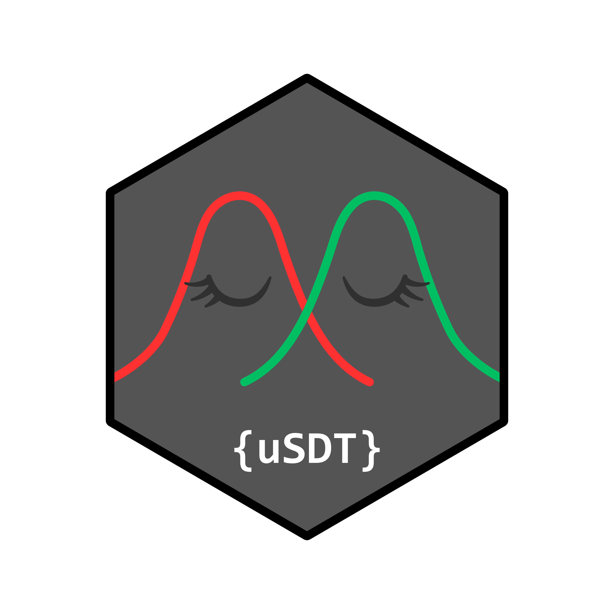

Parametric bootstrap intervals for hierarchical SDT models
Source:R/bootstrap.R
usdt_boot.RdSimulates new datasets from a fitted model using lme4::bootMer(), refits
the model to each replicate, and computes bootstrap confidence intervals
for the three core hypotheses (H1, H2, H3). This is especially useful when
asymptotic Wald intervals are unreliable due to singular or boundary fits.
Usage
usdt_boot(
object,
nsim = 1000,
ncores = 1L,
max_attempts = 2 * nsim,
seed = NULL,
progress = interactive(),
level = 0.95,
type = c("perc", "norm", "basic")
)Arguments
- object
An
hsdtobject fitted byhsdt().- nsim
Target number of successful replicates (at least 500).
- ncores
Number of CPU cores for parallel processing. Values above 1 create a temporary cluster that works across Windows, macOS, and Linux, and automatically stops when finished.
- max_attempts
Maximum number of refits to attempt. Defaults to
2 * nsim.- seed
Random seed for reproducibility.
- progress
Logical. Display a progress bar during fitting (defaults to
TRUEin interactive sessions).- level
Confidence level for intervals (default is 0.95).
- type
Type of bootstrap interval:
"perc"(percentile),"norm"(normal approximation with bias correction), or"basic"(empirical basic). For correlations,"norm"and"basic"operate on the Fisher-\(z\) scale; if the sample correlation lies on the boundary (-1 or 1), these types returnNA, whereas"perc"remains available.
Value
An updated hsdt object where interval columns in $tests are
replaced by bootstrap estimates. A new $boot element contains:
$t: Matrix of replicates for the three hypotheses.$variance: Replicates of sensitivity variances.$population: Replicates of average criteria and sensitivities.$subjects: Replicates of individual-level parameters.Run diagnostics and convergence counts (
usable,attempted,retained,failures).
Details
Replicates are dropped only if the model fails to fit or does not converge. Singular fits and boundary estimates are intentionally retained because discarding them artificially narrows intervals in constrained settings.
When an attempted run finishes with fewer than 500 usable replicates, the
original Wald intervals are preserved, a warning is issued, and raw
attempt diagnostics are stored in $boot.
Point estimates remain identical to the original model fit. Two-sided bootstrap \(p\)-values compare the observed test statistic against the centered bootstrap distribution using standard finite-sample adjustment (\((k + 1) / (B + 1)\)), ensuring \(p\)-values never equal zero.
Examples
# \donttest{
# Contextual cuing data from Vadillo et al. (2025)
d <- usdt_data_tasks(
direct = vadillo_awareness,
indirect = vadillo_cuing,
subject_col = "subj",
condition_col = "condition",
condition_levels = c(signal = "old", noise = "new"),
response_col = list(direct = "judged.old", indirect = "rt"),
response_levels = list(direct = c(signal = 1, noise = 0),
indirect = c(signal = "faster", noise = "slower")),
dichotomize = list(direct = FALSE, indirect = TRUE)
)
m <- hsdt(d)
# }
if (FALSE) { # \dontrun{
# Run parametric bootstrap with 500 replicates. Refitting this model 500
# times takes several minutes, so this block is not run by R CMD check
b <- usdt_boot(m, nsim = 500, seed = 1)
# Inspect updated summary with bootstrap intervals and p-values
summary(b)
# Check fit diagnostics across bootstrap replicates
b$boot[c("usable", "attempted", "retained", "failures")]
} # }